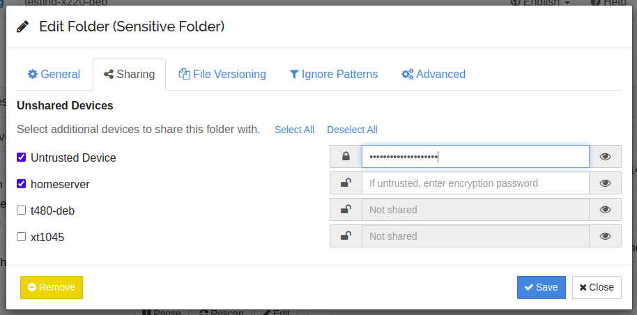

Warning
This feature should still be considered beta / testing only.
Untrusted (Encrypted) Devices¶
It is possible to set a password on a folder when it’s shared with another device. Data sent will be encrypted by this password, and data received will be decrypted by the same password.
Note
The data is encrypted using both the password and the folder ID. You shouldn’t ever need the folder ID as it’s stored in the folder marker, however to be on the safe side make sure you store both securely and reliably.
As an example, let’s assume a trusted device T1, maybe your laptop. You
have sensitive documents here but they are in cleartext from Syncthing’s
point of view (perhaps protected by full disk encryption). There is also an
untrusted device U1, perhaps a cloud server, where we want to sync
data but in unreadable form.
We set a folder password on T1 when sharing the folder with U1. Data
on disk on T1 is not affected, but data sent to U1 becomes encrypted
– garbage, if you don’t know the password.
From this setup it’s also possible to add further trusted devices, say
T2, and have these sync the data from the untrusted device U1
without being in contact with T1. Using the same folder password on
T2 makes the existing data on U1 intelligible and the plaintext data
becomes available.
Similarly, it’s fine to add “normal mode” synchronization between untrusted devices.
Configuration¶
GUI¶
On a trusted device you can set a password for a device and folder in the share tab of folder and device edit dialogs. To share a folder to a trusted device, you simply leave the password field empty. For an untrusted device, enter a password. You can click on the eye to toggle the password visibility.
For a single device, it is possible to share different folders both in the usual way and encrypted. This may be useful, if you have one folder with sensitive data, that you do not want another device to read, and another folder with data that is unproblematic. If you never want to sync any unencrypted data to a particular device, you can mark it as untrusted in the advanced tab of the device edit dialog. This will prevent a connection to that device if you forget to set a password on any folder shared with it.
On untrusted devices, you need to set the folder type to “Receive Encrypted”.
config.xml¶
This is the configuration on a trusted device. Here the folder default
is shared with three devices. The device 373HSRP is a traditional
trusted peer. The other two devices CJBIJBJ and I6KAH76 are both
untrusted and will get encrypted folder data, using different passwords.
<folder id="default" ...>
<device id="373HSRP-...">
<encryptionPassword></encryptionPassword>
</device>
<device id="CJBIJBJ-...">
<encryptionPassword>foo</encryptionPassword>
</device>
<device id="I6KAH76-...">
<encryptionPassword>bar</encryptionPassword>
</device>
</folder>
On untrusted devices the type of the folders has to
be receiveencrypted.
Caveats¶
The untrusted device must not be able to compare encrypted data between
different files and detect if data is equal. This means that blocks cannot as
usual be reused between files. When a file is changed, blocks from the old file
can still be reused. As an example, if you rename a file foo to Foo
syncthing will usually do an efficient rename or at least copy all the data
before deleting the old one. On an untrusted device, it will delete the old file
and receive the data for the new file over the network. However if you have a big file,
e.g. video.mp4, and you modify just a part of it (e.g. video metadata), only
the changed block is transferred as usual.
Decrypting data¶
Say you recovered a backup or lost the Syncthing database on an untrusted device, and need to get the plaintext data. To do that there’s a command to convert the encrypted data to plaintext on disk. Meaning you should only do that on a trusted device. To decrypt the data, run the following command pointed at the root of the encrypted folder:
$ syncthing decrypt --to <plaintext-destination> --password <your-password> <encrypted-folder-path>
Technicals¶
The following things are encrypted / hidden / protected on untrusted devices:
File data
File metadata, including name, times and hashes
File structure (your directory structure is not replicated, even in encrypted-name form)
The following things are not protected:
Folder ID and label
File sizes (files grow a little on the encrypted side compared to the plaintext original, but it’s still easy to derive the original size from the encrypted file)
Encryption is XChaCha20-Poly1305 and AES-SIV with a key derived from the password and folder ID using scrypt. Refer to Untrusted Device Encryption for details.
Untrusted Side File Structure¶
The directory structure on the untrusted side doesn’t follow that of the
plaintext hierarchy. Instead file names are encrypted as a whole, with their
full path within the folder, and then split into a logical structure. As an
example, the name foo.txt (in the folder root) might encrypt to
S21K3P1VJO08DEQJ1DQJE0DLOMT068JJFD857L8ODM2TAKI3CC. On disk this gets split
into a top level directory with a file extension, a second level directory, and
the rest:
The upper level directories serve to combine files, avoiding issues that might arise with having too many files in a single directory.
Similarly, a file with the name Documents/Project/My project.docx might
encrypt to IKFEDO9653D8ON1L776EUI286CPD1C....
With the same system as above this file gets placed as:
Even longer files get split into deeper directories, and files sharing (encrypted) first characters in the name will end up beside each other – regardless of their original placement in the folder.